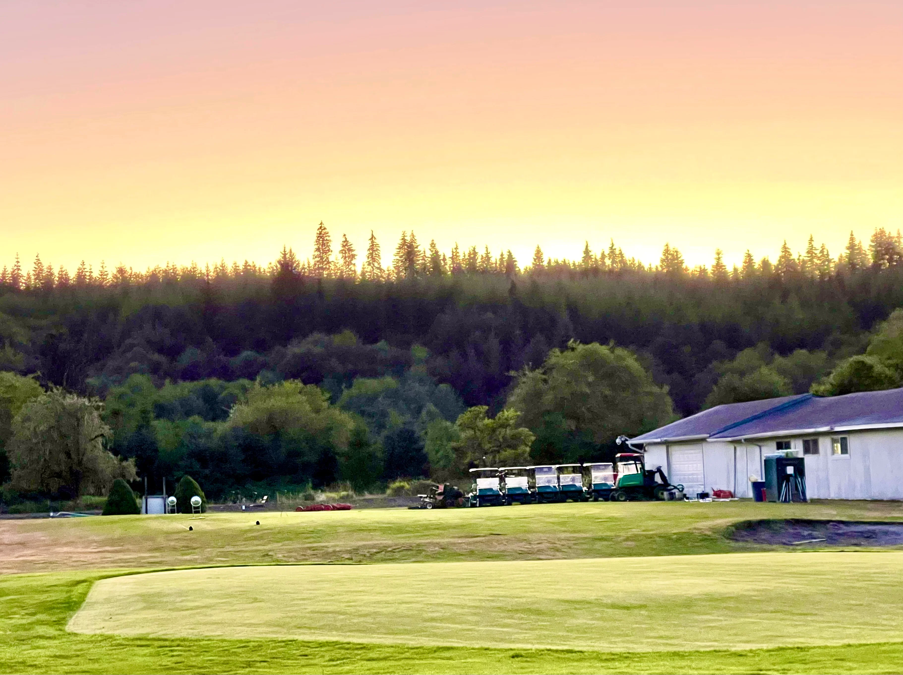

Peter's Resume
In my journey through life, I've cultivated a diverse skill set that reflects my passion for learning and growth. Proficient in VBA, SQL, HTML/CSS, and Excel, I've honed my technical abilities to navigate complex data and develop efficient solutions. Alongside my technical prowess, I've excelled in sales, leveraging strong communication skills to forge meaningful connections and drive business success. Adept at problem-solving, I thrive in dynamic environments where creative thinking and adaptability are key. Beyond the professional realm, my passions extend to the great outdoors, where I find solace and inspiration through activities such as hiking, swimming, golfing, and dirt biking. These pursuits not only fuel my sense of adventure but also provide invaluable opportunities for personal growth and rejuvenation. With a love for life and a thirst for new experiences, I approach each endeavor with enthusiasm and a commitment to excellence.
Education
- Passions
- Dirt Biking
- Golfing
- Hiking
- Excercise
- Surfing
- Snowboarding
- Boating
- Willapa Valley High School
- Grays Harbor College
- Brigham Young University
- Skills
- SQL
- HTML/CSS
- Tableau
- VBA
- HR Management
- Communication
- Sales
- Marketing
- Excel
- Accounting
Renovating a Golf Course
I had the incredible opportunity to work on and help renovate a golf course in Raymond, WA. Embarking on this journey was a thrilling experience, allowing me to combine my passion for golf with my expertise in course design and renovation. From the outset, I was immersed in every aspect of the project, from planning and conceptualization to hands-on work in reshaping bunkers, redesigning greens, and refining fairways. Drawing upon my skills in landscaping and turf management, I sought to enhance the natural beauty of the course while optimizing its layout for strategic play. With each decision made, I was driven by a commitment to uphold the integrity of the course and ensure that it would provide an unforgettable experience for golfers of all levels. It was an honor to contribute to the transformation of this beloved golfing destination, and I am proud to have played a role in shaping its future for years to come.
River Woods Golf Course
After two years of tireless collaboration and unwavering dedication from our team, I am thrilled to unveil the stunning transformation of the golf course in Raymond, WA. What began as a shared vision has blossomed into a breathtaking sanctuary for golfers and nature enthusiasts alike. Through countless hours of hard work, innovative thinking, and a steadfast commitment to excellence, we have revitalized every aspect of the course. From redesigning bunkers to refining fairways and enhancing the natural landscape, each member of our team has played a vital role in bringing this vision to life. The result is a testament to our collective passion for the game and our shared desire to create an unparalleled golfing experience. I am incredibly proud of what we have achieved together, and I cannot wait to share this remarkable achievement with golfers far and wide.

Tableau Driver Data
Explore our curated dataset showcasing the most desirable drivers in the world of golf. Compiled through extensive research and expert analysis, this collection represents the pinnacle of innovation, performance, and craftsmanship in golf club technology. Each driver featured in this dataset has been meticulously evaluated based on criteria such as distance, accuracy, forgiveness, and feel, ensuring that only the finest options are included. Whether you're a seasoned pro seeking to fine-tune your game or a casual player looking to elevate your performance, you'll find valuable insights and recommendations here to help you make informed decisions and unlock your full potential on the course. Discover the drivers that are reshaping the landscape of modern golf, empowering players of all skill levels to achieve new heights of success and enjoyment.

Top of Page